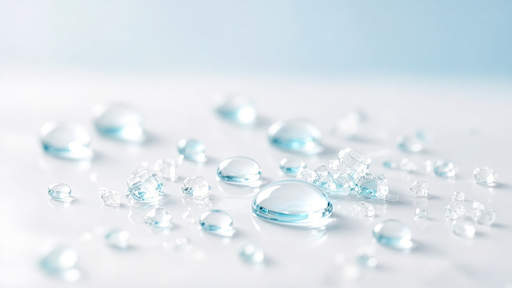

The science
Why electrolytes, and why a pouch.
Hydration isn't only about how much water you drink. It's about whether your body can hold on to it and use it. That's what electrolytes do.

The short explanation
Electrolytes are minerals that carry an electrical charge when dissolved in your body's fluids. They govern how water moves between your bloodstream and your cells, how nerves send signals, and how muscles contract and release.
You lose them when you sweat — sodium most of all. Replace the fluid without replacing the minerals and your body has a harder time holding on to what you just drank. That's the gap MOVO is built to fill.
Four actives
What each one is doing
Per pouch, identical in Mint and Citrus.
-
250 mg
Sodium
The electrolyte you lose most in sweat. Sodium helps keep fluid in your bloodstream rather than passing straight through, and it's central to nerve signalling.
-
75 mg
Potassium
Sodium's counterpart. Potassium works inside the cell, and the balance between the two is what drives normal muscle contraction.
-
15 mg
Magnesium
Involved in hundreds of enzymatic reactions, including the ones that let a contracted muscle relax again and that release energy from food.
-
100 mg
L-Taurine
An amino acid concentrated in muscle tissue. Taurine helps regulate fluid balance at the cellular level and supports muscle function.
Why the pouch format
The inside of your cheek and lip is thin, well supplied with blood vessels, and permanently moist. Placing a pouch there puts the formula in contact with that tissue and releases it steadily over roughly 15 to 20 minutes, rather than all at once.
The practical advantage is the one that matters most day to day: there is nothing to mix and nothing to carry. You don't need to find water, you don't need a bottle, and your hands stay free. For a lot of people the best electrolyte product is simply the one they actually have on them.
Being straight with you
We're not claiming MOVO hydrates you better than a well-made sports drink. It delivers electrolytes in a format that travels with you. It does not replace drinking water, and it isn't a medicine. MOVO is a food supplement, and it isn't intended to diagnose, treat, cure, or prevent any disease.